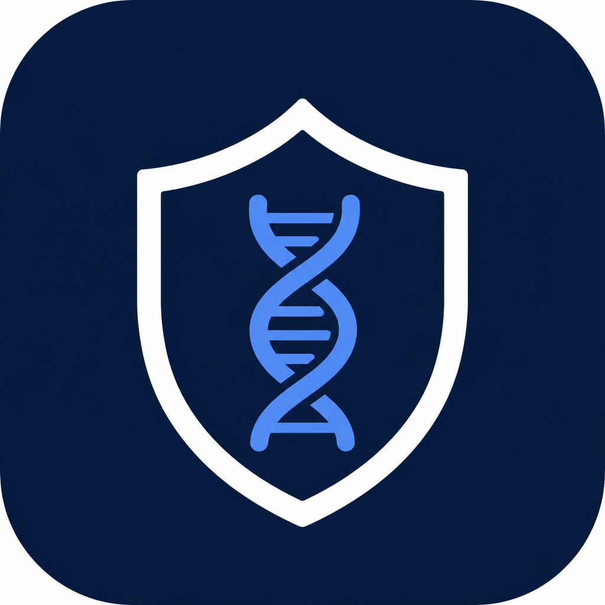

Publish Guardian
Sign in with your PinIT Hub account to protect posts and verify media.
Signed in as —
YouTube Studio: choose a video once — PinIT protects in the background. Right-click → Verify / Protect with PinIT.